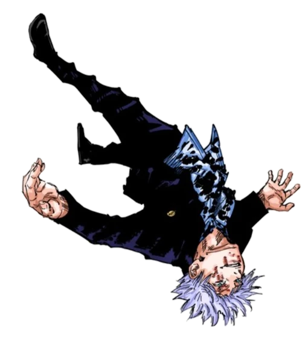

Satoru Gojo é um personagem central e uma figura altamente influente na série de mangá e anime "Jujutsu Kaisen"
, criada por Gege Akutami. Ele é um dos jujutsu sorcerers mais poderosos e carismáticos da série.
Abaixo, apresento uma biografia completa de Satoru Gojo até a minha última atualização em setembro de 2021:
Nome Completo:
SATORU GOJO

Origens e Background:
Satoru Gojo é natural do Japão e nasceu em uma família de jujutsu sorcerers. Desde jovem, ele mostrou grande
habilidade no uso de técnicas de maldições e, eventualmente, ingressou na Escola de Jujutsu de Tóquio,
onde se tornou um aluno notável.
Gojo é conhecido por sua incrível habilidade em jujutsu sorcery e é considerado o jujutsu sorcerer mais poderoso da série.
Suas habilidades notáveis incluem: Limitless Cursed Technique (Técnica Amaldiçoada Sem Limites): Esta é a principal técnica de Gojo, que lhe permite manipular
o espaço e o tempo. Com essa técnica, ele pode criar barreiras, distorcer a realidade e eliminar maldições com facilidade.
É uma habilidade incrivelmente versátil e poderosa. Six Eyes (Seis Olhos): Gojo possui uma linhagem rara que lhe concede os "Seis Olhos",
uma habilidade que aumenta sua percepção e poder. Ele é um dos poucos jujutsu sorcerers a ter essa linhagem.
Papel na Série:
Gojo atua como um mentor e figura de autoridade para os protagonistas da série, incluindo Yuji Itadori.
Ele é conhecido por seu senso de humor irreverente e personalidade excêntrica.
Gojo é frequentemente encarregado de enfrentar as ameaças mais poderosas do mundo das maldições, incluindo Sukuna Ryoumen.
Confrontos Notáveis:
Gojo participa de vários confrontos ao longo da série, incluindo a luta contra Sukuna e outros antagonistas poderosos.
Suas batalhas são sempre espetaculares e destacam sua imensa força.
Impacto e Legado:
Satoru Gojo é uma das figuras mais icônicas da série "Jujutsu Kaisen". Ele é admirado e temido por seu poder inigualável.
Seu objetivo é treinar a próxima geração de jujutsu sorcerers e proteger o mundo das maldições.
Gojo tem uma influência significativa no desenvolvimento dos personagens principais e no enredo da série.
Vale ressaltar que a série "Jujutsu Kaisen" estava em andamento na época da minha última atualização em setembro de 2021,
e mais informações sobre o personagem e sua história podem ter sido reveladas desde então.
Portanto, recomendo verificar fontes atualizadas para obter informações mais recentes sobre Satoru Gojo e seu papel na série.